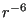
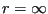
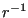

Next: The Ewald Coulombic energy Up: CHE T580: Modern Molecular Previous: Molecular Dynamics at Constant
So far, we have considered interparticle interactions that are short-ranged by construction. Because the Lennard-Jones potential decays so strongly with distance (as ), it is acceptable to cut off this interaction at moderate distances and, if desired, add a correction factor which is the result of integrating the potential over a uniform particle density out to . However, Coulomb interactions, common in molecular simulation, decay relatively much more slowly (as ) and as a consequence, we cannot compute a correction factor; the integral diverges. There are several ways to handle long-ranged interactions, but the most popular is the Ewald summation [14], which we discuss here. This discussion is drawn primarily from F&S chapter 12 [1], and the excellent paper by Markus Deserno and Christian Holm [15,16].